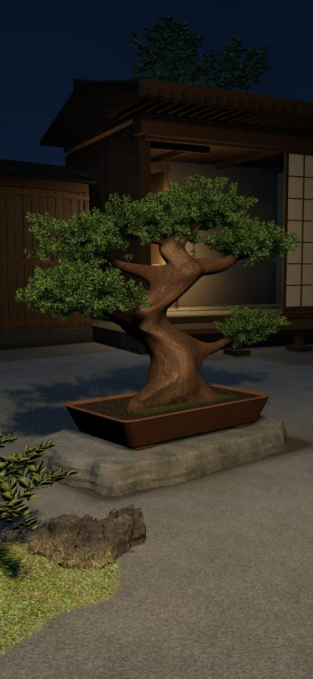
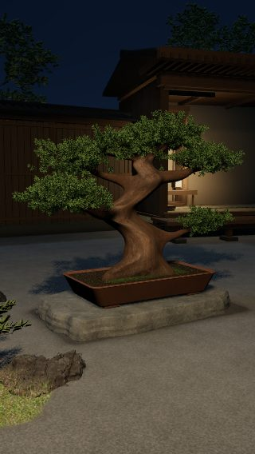
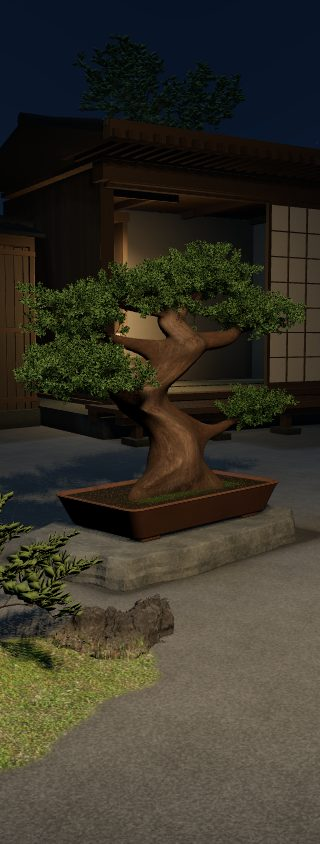
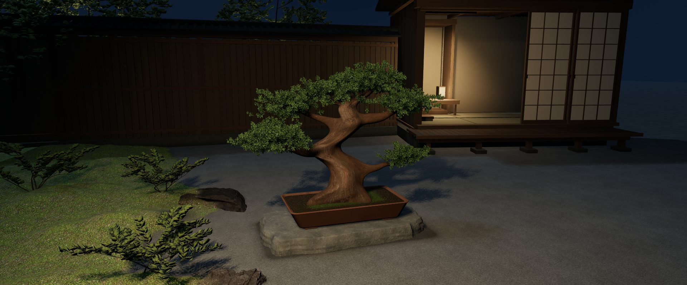
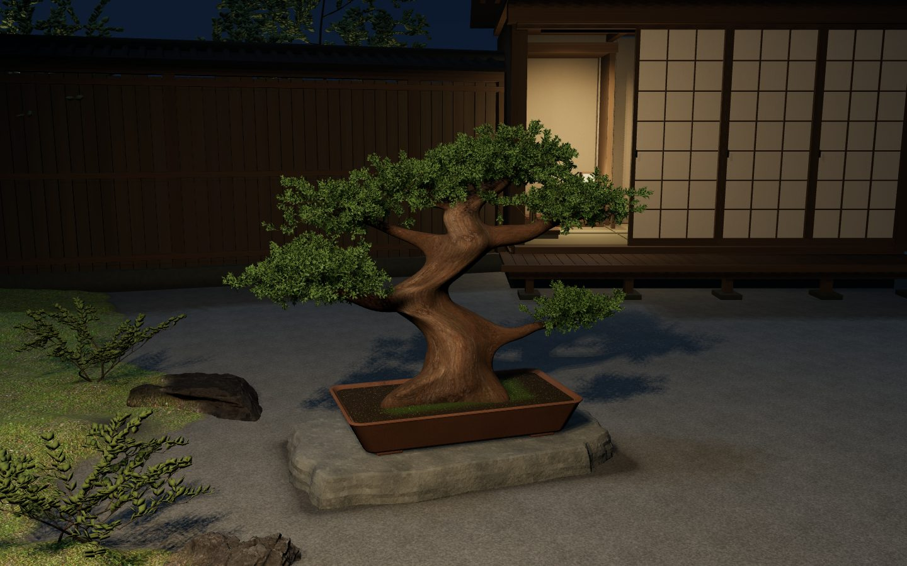
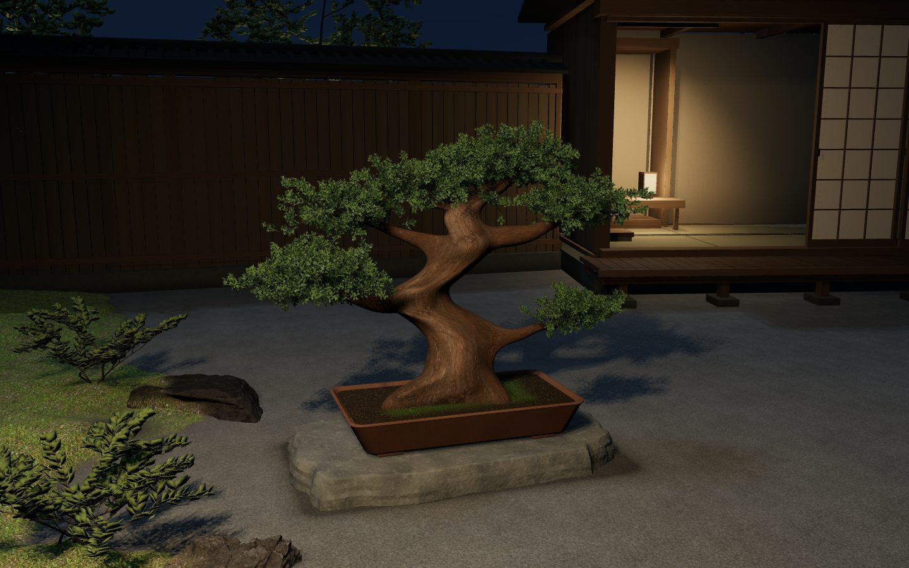
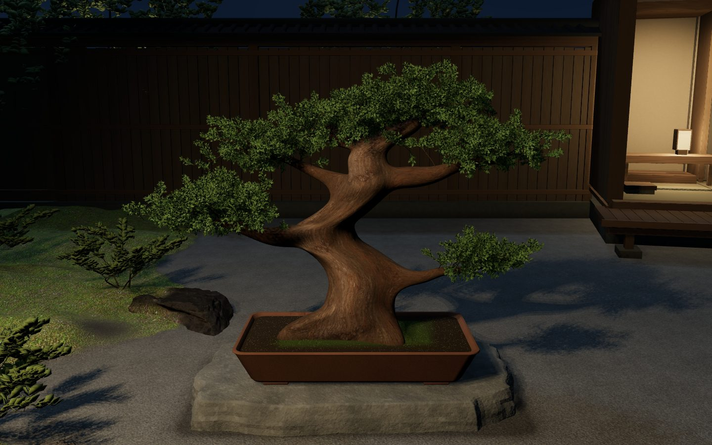
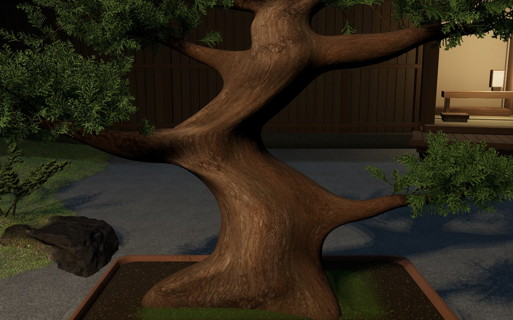
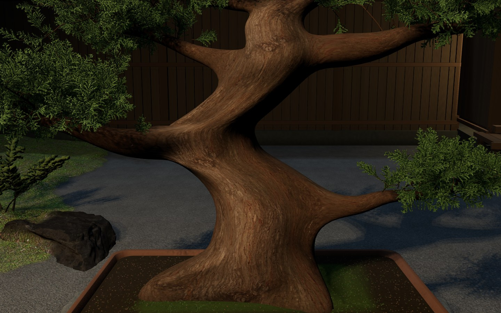

PC


文字のないサイトとは別のローカル確認資料。空間は相対改善、Retina p95退行でbest未更新。premium完成不合格。
PC/wideの通常全景カメラはR20から変更。mobileは実camera/hero/LOD/FOV/exposure/key一致。下のstrict庭/盆栽/幹の3組は実カメラまで一致、背景家屋・室内光の物理位置と植物・地面材質は変更。














幹寄りwoodは実93mesh/high葉4.67M、全木を収める通常構図ではない。Retina比較の全116sample p95旧21.186／新24.089ms、採用gate不合格。